sublime text 3 插件分享
提高效率的Sublime Text 3插件
虽然是收费的，但网上可以找到注册码
如下是网上找来的注册码，打开菜单的 help > Enter License ，复制进去就行了。
1 | —– BEGIN LICENSE —– |
先安装Package Control
点击菜单中的 “View”–“Show Console”（也可通过快捷键 Ctrl + ` (ctrl + `) 打开，不过可能因与系统其他软件快捷键冲突而打不开）调出 Console。然后把下面的代码粘贴进去后回车即可，需稍微等待一段时间。（以下代码可能会因更新而导致失效，请以官网代码为准。Package Control）
sublime text 3
import urllib.request,os,hashlib; h = ‘df21e130d211cfc94d9b0905775a7c0f’ + ‘1e3d39e33b79698005270310898eea76’; pf = ‘Package Control.sublime-package’; ipp = sublime.installed_packages_path(); urllib.request.install_opener( urllib.request.build_opener( urllib.request.ProxyHandler()) ); by = urllib.request.urlopen( ‘http://packagecontrol.io/' + pf.replace(‘ ‘, ‘%20’)).read(); dh = hashlib.sha256(by).hexdigest(); print(‘Error validating download (got %s instead of %s), please try manual install’ % (dh, h)) if dh != h else open(os.path.join( ipp, pf), ‘wb’ ).write(by)
重启Sublime Text即可。
建议通过 Package Control 安装Sublime插件
使用 Ctrl + Shift + P（shift + command + p） 调出面板，然后输入 pci ，选中“Package Control: Install Package”并回车，然后通过输入插件的名字找到插件并回车安装即可,安装时左下角会显示正在安装的项目。有些插件需要安装node.js，只要下载并将node.js目录配置到环境变量中即可。
插件不要使用太多，可能会出现快捷键冲突导致插件失效的情况，当然你也可以修改默认快捷键。
1. Emmet
使用仿CSS选择器的语法来生成代码，大大提高了HTML/CSS代码编写的速度。本人认为最能提高效率的Sublime Text插件。
在html文件开头输入！ + Tab键
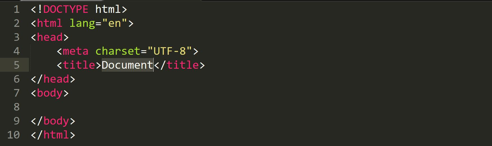
我在Mac上安装的emmet插件的时候，有遇到过嵌套表达时 tab键失效的情况，
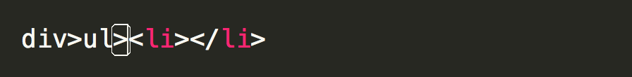
- 要先确定你的编译环境是html
- 还可能是pyv8的问题，由于Emmet插件需要pyv8插件，你需要戳 👉👉👉这里 下载zip。然后解压到sublime的在Packages目录下
在页面的最下方👇👇👇 选择你sublime的版本，以及电脑的版本。
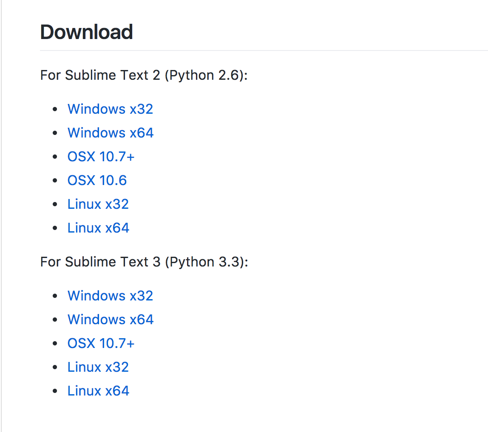
然后重启sublime 就可以了。
2. CSScomb
CssComb是为CSS属性进行排序和格式化插件
使用Package Control安装CssComb插件后，你可能发现它并不能运行
它依赖于Node.js
使用方法，编辑窗口直接右键 单击 Run CSScomb，或者 Ctrl+Shift+C，
编辑前后的对比
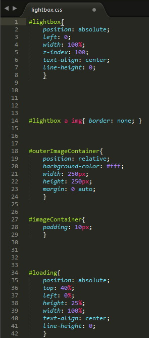
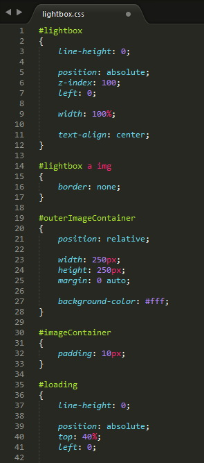
3. Autoprefixer
这是一款CSS3私有前缀自动补全插件
该插件使用CanIUse资料库，能精准判断哪些属性需要什么前缀
与CssComb插件一样，该插件也需要系统已安装Node.js环境
使用方法：在输入CSS3属性后（冒号前）按Tab键
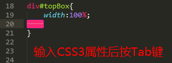
或者 按 Ctrl+ Shift + P，然后选 Autoprefix CSS 或者设置键盘快捷键 – Preferences > Key Bindings – User
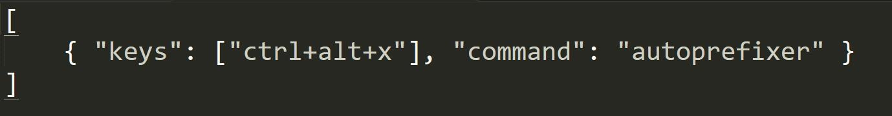
4. ColorPicker
通常，如果你想使用一个颜色选择器则可能打开 Photoshop 或 GIMP。而在 Sublime Text 中，你可以使用内置的颜色选择器。安装完成后，只要按下Ctrl / Cmd + Shift + C快捷键。
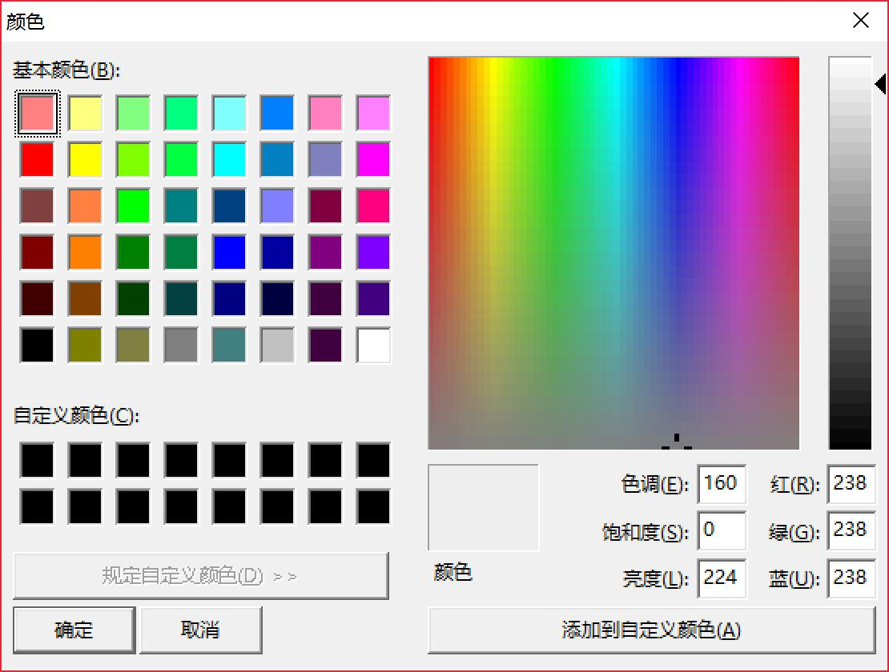
当然这里和之前的CSScomb 快捷键冲突了，
我们需要打开菜单中的preferences->Browse Packages进入插件安装目录，打开ColorPicker文件夹，
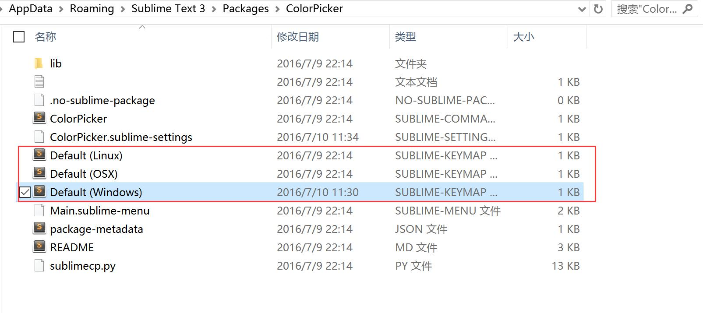
对应自己电脑的操作系统进入相应的文件进行设置。
本人的是window笔记本，因此打开 Default (Windows) 文件，如图

将ctrl+shift+c 改为 ctrl+shift+d 即可，当然也可以改成其他的，但是必须避免和其他的快捷键产生冲突。
5.MarkdownEditing 和 OmniMarkupPreviewer
MarkdownEditing是Markdown写作者必备的插件，它可以不仅可以高亮显示Markdown语法还支持很多编程语言的语法高亮显示。
OmniMarkupPreviewer用来预览markdown 编辑的效果，同样支持渲染代码高亮的样式。ctrl + Alt + o 即可在浏览器中实时预览。
Ctrl + Alt + O: 在浏览器中预览Ctrl + ALt + X: 导出HTMLCtrl + Alt + C: HTML标记拷贝至剪贴板
6.Color Highlighter
Color Highlighter这个插件会检测CSS文件中的颜色码，不论是Hex码或者RGB码都能很好的显示。
再选中颜色码时会显示颜色。
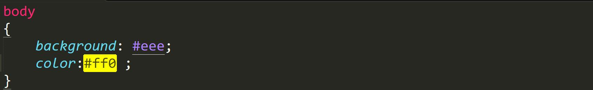
为让Color Highlighter能够设置成用背景色或者边框提示颜色，我一般在Settings里做这样的设置：
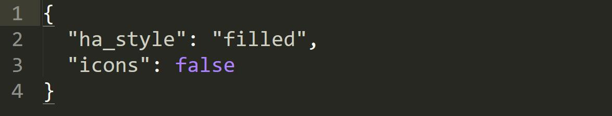
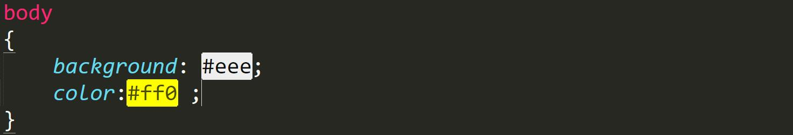
不需要选中就可以显示颜色码的颜色。
7. AutoFileName
文件路径自动提示，不过这个精准度的不够高，很多不是文件路径的地方都会提示。
8. JQuery
JQuery代码提示
输入 ajax + Tab，就会产生图示框架，很方便
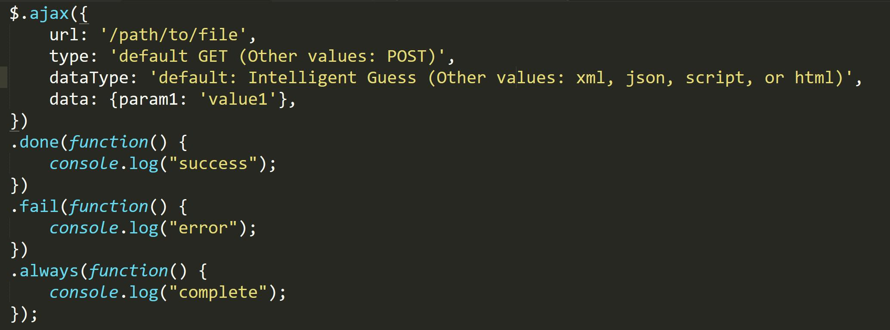
9. ConvertToUTF8
Sublime Text 本对中文支持不太好，如果直接打开 GBK 编码格式的文件会出现乱码的情况，ConvertToUTF8 可以将 GBK 等其他的编码文件转换为 UTF8 显示，解决中文乱码问题。
通过本插件，您可以编辑并保存目前编码不被 Sublime Text 支持的文件，特别是中日韩用户使用的 GB2312，GBK，BIG5，EUC-KR，EUC-JP 等。ConvertToUTF8 同时支持 Sublime Text 2 和 3。 ——- ConvertToUTF8 官方介绍
其他还有很多好用方便的 插件，比如
- JsFormat (js格式化工具)、
- BracketHighlighter (高亮显示匹配的括号、引号和标签)
- Alignment (等号对齐)